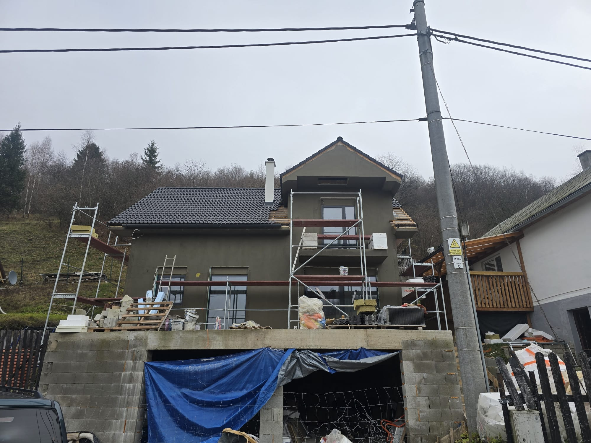
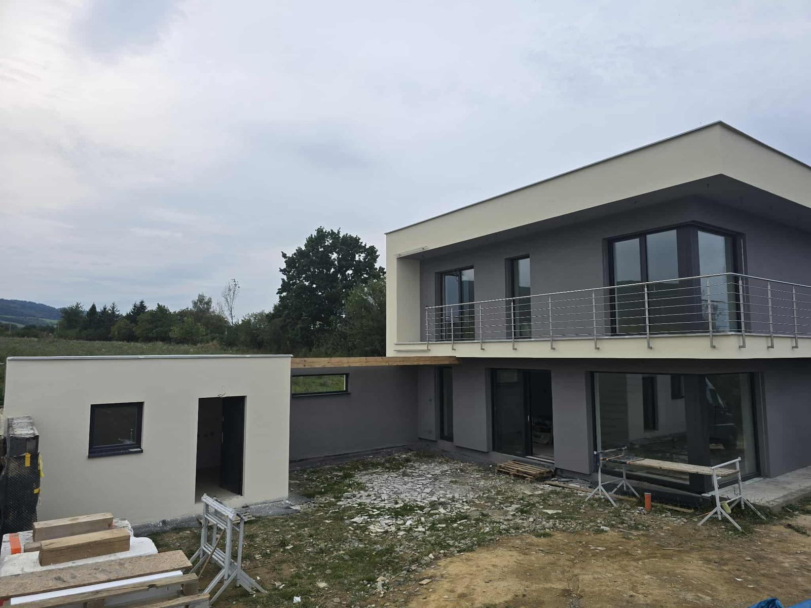
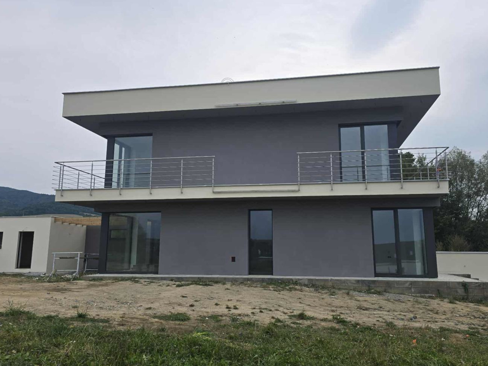
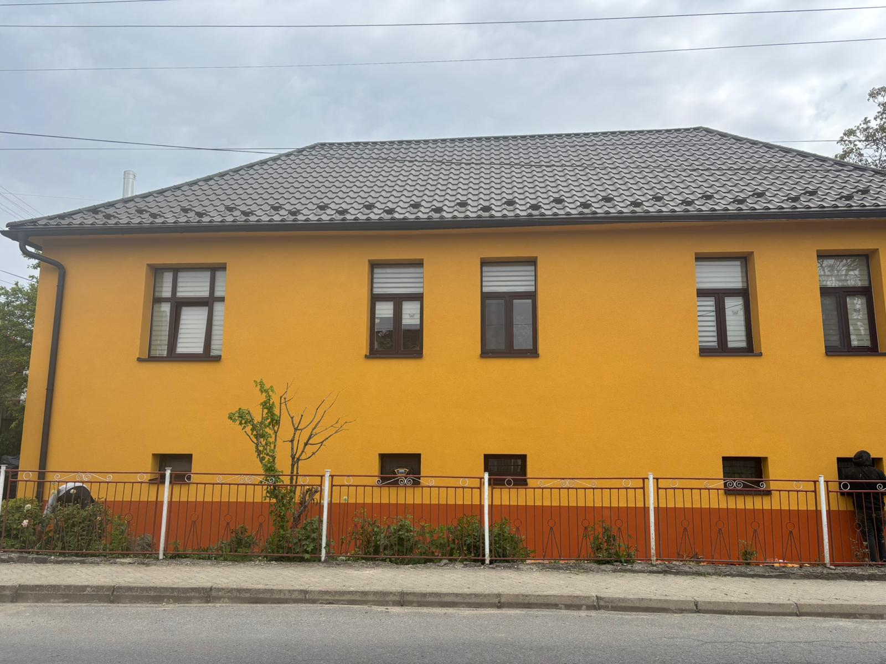

Zatepľovanie budov
Moderné zatepľovanie rodinných a bytových domov v systéme ETICS – polystyrén alebo vlna, s dôrazom na detaily a tepelné mosty.
Dohodneme, poradíme, zrealizujeme a necháme poriadok. Komplexné stavebné práce s vlastným vybavením – so zárukou a termínom, ktorý sa nemení.


Sykowni Chłopcy je stavebná firma z Malopoľska. Už tri roky realizujeme zatepľovanie, omietky a fasády pre zákazníkov v Poľsku a na Slovensku.
Pracujeme s vlastným vybavením, takže nestrácate čas organizovaním zázemia stavby. Nenútime vás do najdrahších riešení – vyberáme také, ktoré dávajú zmysel pre vašu budovu a rozpočet, a ak sa niečo neoplatí robiť, povieme to na rovinu. Za to, čo zrealizujeme, nesieme plnú zodpovednosť.
Komplexne sa staráme o fasádu a jej okolie – od izolácie až po posledný odkvap.
Moderné zatepľovanie rodinných a bytových domov v systéme ETICS – polystyrén alebo vlna, s dôrazom na detaily a tepelné mosty.
Fasádne omietky, ktoré chránia pred vlhkosťou a počasím, a zároveň dodávajú budove moderný a rovnomerný vzhľad na dlhé roky.
Oplechovanie strechy a prvkov budovy – tesne, esteticky a tak, aby sa voda nemala kde zadržiavať.
Montáž vonkajších a vnútorných parapetov a kompletných odkvapových systémov – so zachovaním spádov a poriadnym utesnením.
Odolné podhľady chrániace drevenú konštrukciu pred vlhkosťou a vtákmi, ktoré zároveň uzatvárajú vzhľad celej fasády.
Napíšte alebo zavolajte a popíšte, čo potrebujete urobiť. Ak daný rozsah nie je našou špecializáciou, povieme to na rovinu a poradíme, kto sa o to postará.
Požiadať o cenovú ponukuViete, čo sa deje v každej fáze – a koľko to bude stáť ešte predtým, ako začneme.
Prídeme na miesto, zhodnotíme stav budovy a vykonáme zameranie – vypočítame, koľko a akého materiálu bude potrebných.
Poradíme s najlepšími riešeniami pre vašu budovu a rozpočet. Na požiadanie sami zakúpime a dovezieme materiál na miesto – nemusíte sa o nič starať.
Prídeme na stavbu v dohodnutom termíne a pracujeme systematicky. Budete priebežne informovaní o postupe prác.
Po dokončení prác upraceme okolie a odovzdáme vám hotovú fasádu. Preberáte si dokončenú prácu, nie stavenisko.
Kliknite na fotografiu, aby ste videli stav pred začatím prác a po ich dokončení.






Povedzte, čo plánujete urobiť. Dohodneme sa na obhliadke, vykonáme zameranie, vypočítame potrebu materiálov a pripravíme konkrétnu cenovú ponuku – bez poplatkov a bez záväzkov.
Nenašli ste odpoveď? Zavolajte – vysvetlíme všetko ľudsky a zrozumiteľne.
Na poľskej strane pôsobíme v celom Malopoľsku, najmä v okolí Grybówa a Nowého Sącza. Na Slovensku realizujeme zákazky v regióne Prešova, Popradu, Košíc a Bardejova. Do úvahy prichádzajú aj vzdialenejšie výjazdy – stačí sa opýtať, radi preveríme, či sa to dá zosúladiť s termínmi.
Nič. Dojazd, obhliadka, zameranie a príprava cenovej ponuky sú bezplatné a k ničomu vás nezaväzujú – a to aj v prípade, ak sa nakoniec rozhodnete pre iných majstrov.
Áno. Poradíme vám, aká štruktúra a farba sa hodí k vašej budove a ktoré riešenia sú v našom podnebí trvácnejšie. Rozhodnutie je však vždy na vás.
Ako vám to vyhovuje. Poradíme pri výbere materiálov a na požiadanie ich sami kúpime a dovezieme na miesto – v takom prípade sa nemusíte o nič starať. Môžete si ich zabezpečiť aj sami a my vám poradíme, koľko a čoho treba objednať.
Áno. Na nami vykonané práce poskytujeme záruku – podrobnosti a rozsah určujeme individuálne pri dohadovaní zákazky.
Termín závisí od sezóny a rozsahu prác. Po obhliadke uvedieme reálny termín začatia a ukončenia – a dodržíme ho.
To závisí od plochy fasády, stavu stien a rozsahu dodatočných prác. Pri typickom rodinnom dome ide zvyčajne o niekoľko týždňov. Konkrétny harmonogram poskytneme po zameraní, aby sme nestrieľali termíny naslepo.
„Mokré“ procesy – lepidlá, sieťka, omietky – vyžadujú vhodnú teplotu, preto ich plánujeme v sezóne. Mimo nej realizujeme napr. klampiarske práce, podhľady, parapety a odkvapy. Ak nie sú podmienky na kvalitnú prácu, povieme to na rovinu, namiesto toho, aby sme riskovali výsledok.
Pred začatím prác ich demontujeme a po zateplení opäť namontujeme – so zohľadnením novej hrúbky steny. Ak je potrebné niečo vymeniť, povieme to už vo fáze cenovej ponuky, nie počas prác.
Rozsah, cenu a harmonogram platieb si dohodneme pred príchodom na stavbu a preberieme pri predkladaní cenovej ponuky. Náklady sa počas prác „nenabaľujú“.
Jasné – časť fotografií „pred a po“ nájdete v galérii realizácií. Ak chcete vidieť niečo podobné vašej budove, zavolajte a pošleme vám ďalšie fotky.
Zavolajte alebo napíšte – ozveme sa, hoci aj z lešenia.
+421 952 570 317
grygieltomek99@gmail.com
33‑330 Grybów, Malopoľsko
Malopoľsko a Slovensko